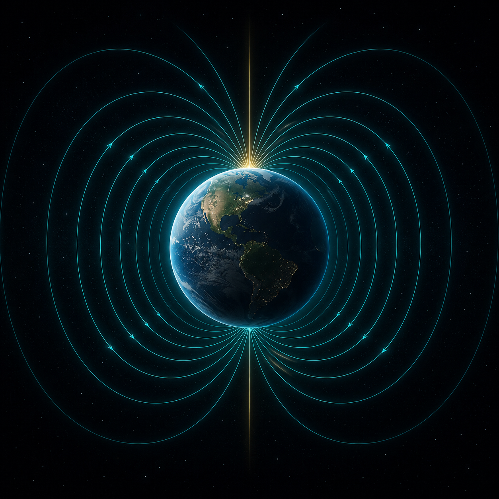
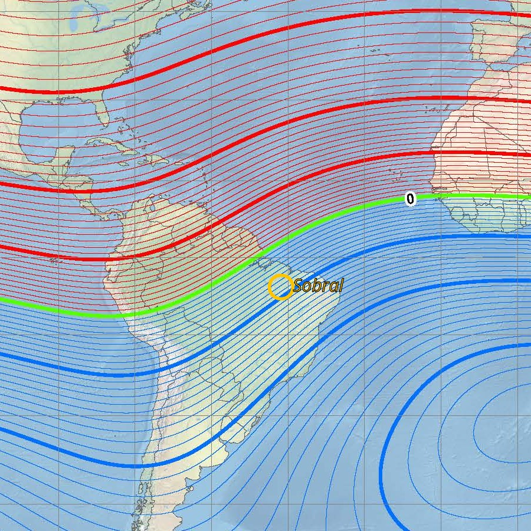
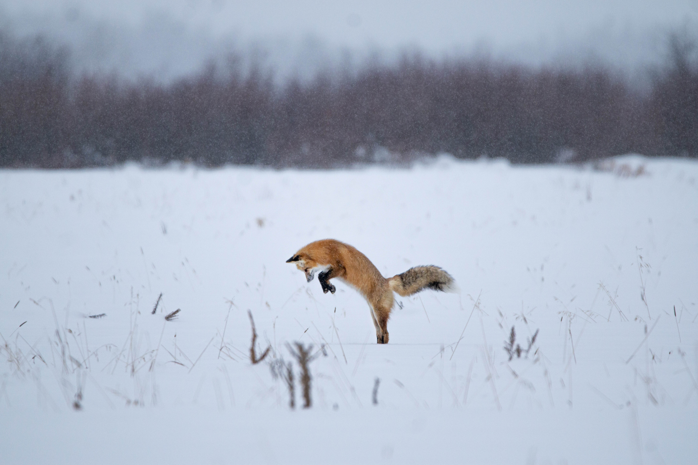
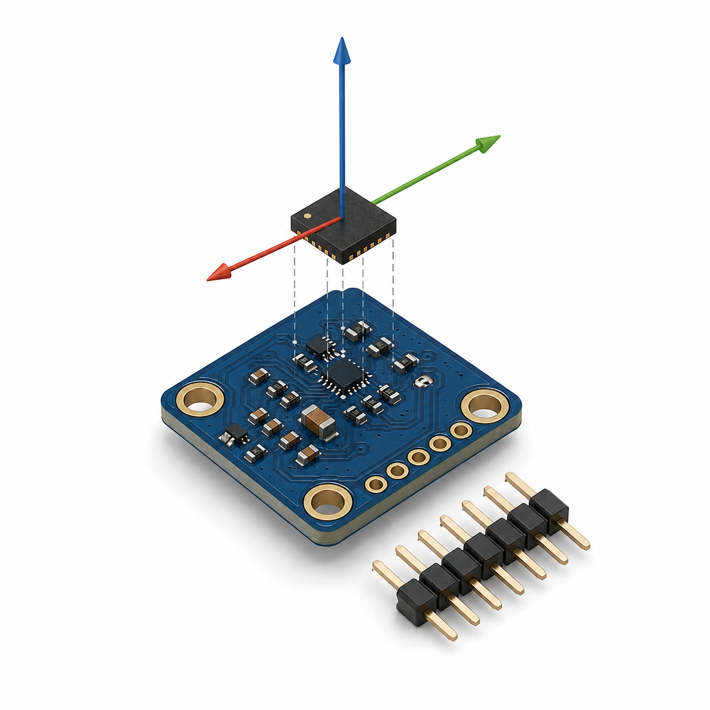
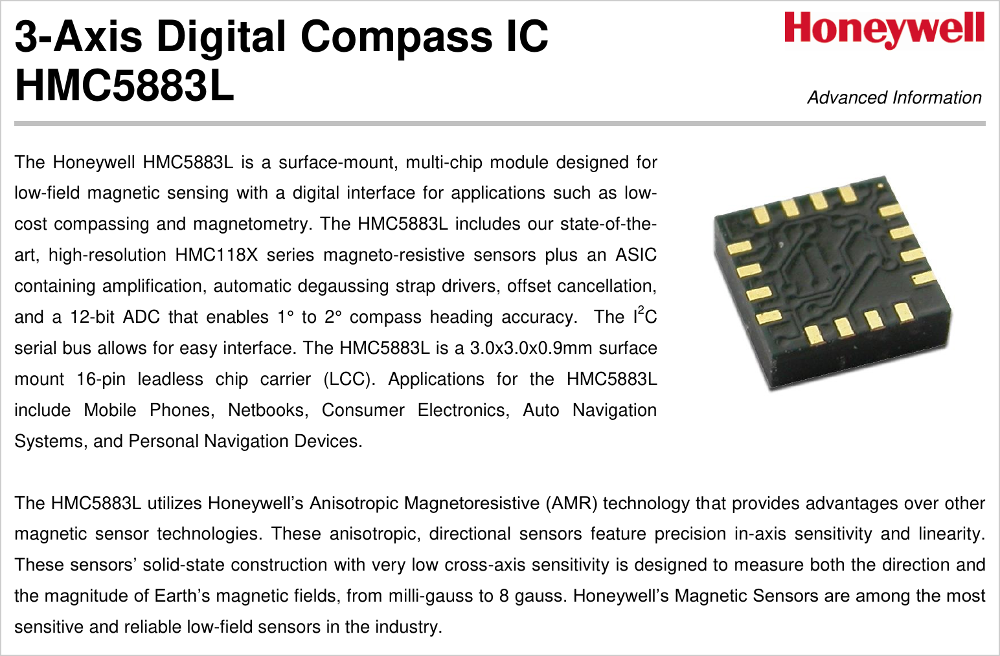

Magnetorrecepção na Raposa Ártica
A bússola que a evolução e a engenharia inventaram
O MISTÉRIO
COMO?
Uma raposa mergulha sob a neve, num alvo que não vê. E acerta.
A Terra é um ímã
Um campo magnético atravessa esta sala. Tem intensidade e, sobretudo, direção.

O campo mergulha conforme a latitude
tan(I) = 2·tan(λ) equador → deitado (I=0) · polo → vertical (I=90°). λ = latitude magnética.
Sobral, sobre o equador magnético
Inclinação baixa: o campo aqui está quase deitado.

A RAPOSA
O animal tem uma bússola
Saltos de caça com direção preferencial para o nordeste magnético.
Červený et al., Biology Letters, 2011 · 592 saltos · raposa-vermelha (Vulpes vulpes)

E são hipóteses
Telêmetro pela inclinação: usar o mergulho do campo para mirar.
Bússola química (spin do elétron): reação sensível ao campo, efeito Zeeman.
Esse truque não funcionaria aqui
Sem mergulho, não há telêmetro. O contraste liga a biologia à medição a seguir.
A ENGENHARIA
Nós construímos um sensor para o mesmo problema
Detectar a direção do campo para se orientar. A função é semelhante; o mecanismo é outro, e conhecido.

E ele está no seu bolso
Mesma função do animal: ler o vetor B para se orientar. E não é invenção nossa.

Quando o campo denuncia algo
O casco de aço de um submarino distorce o campo da Terra. Magnetômetros acusam a anomalia.
O campo desta sala, agora ● AO VIVO
Inclinação baixa → confirma o equador magnético. Aproximar o aço → o vetor salta (anomalia).
A MESMA FÍSICA
Quatro fenômenos, o mesmo campo
Você carrega um magnetômetro no bolso.
A raposa nasceu com um.
O eletromagnetismo não está só no quadro. Está no bolso e na biologia.
Referências
- Červený, J., Begall, S., Burda, H. et al. (2011). Directional preference in hunting foxes. Biology Letters, The Royal Society.
- Hore, P. J. & Mouritsen, H. (2016). The Radical-Pair Mechanism of Magnetoreception. Annual Review of Biophysics.
- Datasheets HMC5883L (Honeywell) e QMC5883L (QST): tecnologia AMR; aplicações de navegação.
- Campo geomagnético e inclinação: NOAA/NCEI (WMM/IGRF); MIT OCW, Essentials of Geophysics.
- MAD / minas magnéticas / degaussing: US Navy (P-3/P-8); UCL (Goodeve).
- Equações de Maxwell e materiais magnéticos: material da disciplina (Prof. Carlos Elmano, UFC Sobral).
- Vídeo de abertura: BBC (documentário de natureza), uso educacional.
- Imagens: P-3C Orion e aurora boreal, U.S. Navy / U.S. Air Force (domínio público); mapa de inclinação NOAA/NCEI (WMM 2025); raposa por Goutham89 (CC BY-SA 4.0); datasheet Honeywell. Detalhes em docs/imagens-manifesto.md.
Obrigado
Perguntas?